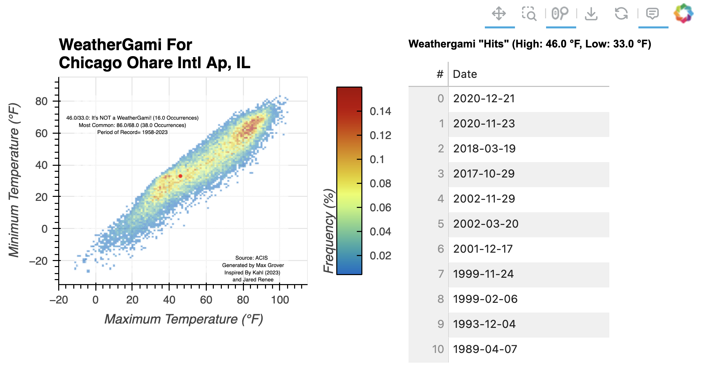

Posted in 2023
Argonne Instruments at WFIP3: Days 3-4: A Full Weekend
- 17 December 2023
We had a busy weekend deploying more instruments that are collecting data for the field observation portion of the 3rd Department of Energy funded Wind Forecast Improvement Project, which focuses on offshore wind regions off the coast of New England. On Saturday, we spent a bulk of the day putting the final touches on the 10 meter meteorology tower, shown below.

Argonne Instruments at WFIP3: Day 2 - Installation Begins!
- 15 December 2023
Today was the first day of real installation work! We started with a quick breakfast at the hotel, then drove to the field site at sunrise (shown below).

Argonne Instruments at WFIP3: Day 1 - Landing in Nantucket
- 14 December 2023
Today was the first day of my trip focused on deploying instruments from Argonne National Laboratory (ANL) (based in Lemont, Illinois), to the East Coast of the United States for the 3rd Wind Forecast Improvement Project (WFIP3). The project aims to improve wind forecasting ability within models, using both models and observations focused on offshore wind farms in the greater Boston, Massachusetts region. Argonne National Laboratory has a collection of instruments, most of which usually reside at the Argonne Testbed for Multiscale Observational Science (ATMOS) https://www.anl.gov/evs/atmos, which can be deployed for different scientific projects! Instruments at Argonne were deployed for previous Wind Forecast Improvement Projects.
The field sites are outlined in the graphic below, which can be found on the project website (https://www2.whoi.edu/site/wfip3/field-observations/) )
Interactive Weathergami
- 22 November 2023

Scorigami is an interesting concept. It’s an event in sports where a final score has never happened in its history. For example, in the National Football League, a 20-17 score has happened over 285 times, but a 70-20 score has only happened once. When the Miami Dolphins beat the Denver Broncos 70-20 on September 24th, 2023, that was considered a scorigami!
AMS 2023 Reflections: Thank You Denver (and Boulder)!
- 16 January 2023
Last week, I attended the 103rd American Meteorological Society Annual Meeting in Denver Colorado. Prior to attending, I put together a blog post detailing my pre-conference thoughts and expressed a high level of excitement for this year’s conference. It did not disappoint. The week was full of meaningful connections with colleagues, leading an open science short course, and attending sessions where I learned new tools and techniques for working with atmospheric and climate datasets.
The week started off with our “Open Science in the Rockies: Working with ARM Data from the Surface Atmosphere Integrated Field Laboratory” short course, with over 20 attendees! A good amount of preparation went into the course, from meeting room logistics, inviting speakers, and testing the cyberinfrastructure that would allow participants to analyze large datasets while on a limited conference internet network. The course started with an overview of the SAIL field campaign, quickly diving into ways to access the data and analyze the datasets using open-source tools funded and supported by ARM! We also covered advanced data visualization techniques using the Pangeo stack, including using Xarray and the Holoviews tools to visualize an entire day’s worth of high spatiotemporal cloud radar data.
Pre-AMS 2023 Reflection
- 05 January 2023
It is hard to believe that tomorrow I will hop on a plane for AMS 2023. Am I prepared for all of my presentations, co-chair obligations, and general travel logistics? Absolutely not. I am however excited to reconnect with the weather community in beautiful Colorado, with this being the first in-person AMS Annual Meeting since January 2020.
While I typically reflect on conferences after the event, I wanted to take this as an opportunity to express why the American Meteorological Society (AMS) Annual Meeting is such an amazing event, how it has influenced my career (and my life in general), as well as some general advice for the week!